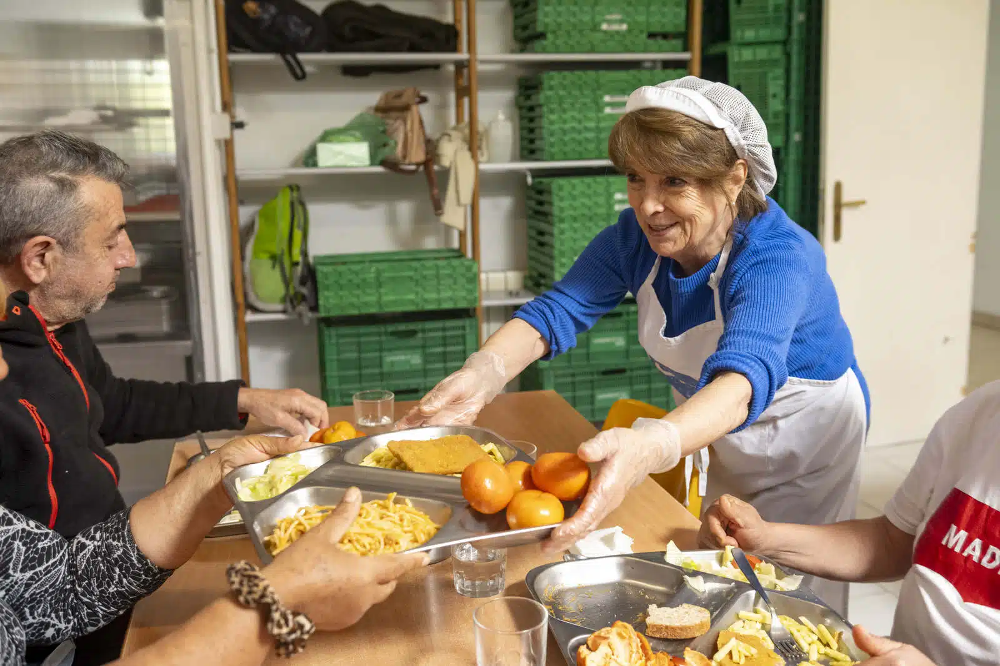

¿QUIÉNES SOMOS?
Somos un grupo de estudiantes de la universidad de Jaén, desarrolladores de la gestión de un comedor social ubicado en C/Linares. Nuestra labor principal no es otra que gestionar los turnos de los voluntarios de este comedor, con el fin de contribuir positivamente en la sociedad.
¿CUÁL ES NUESTRA LABOR?
Trabajamos en base a los ODS, enfocándonos princpalmente en el de "Hambre 0", nos encargamos de que los voluntarios del comedor puedan inscribirse en los turnos que deseen, así como darse de baja en ellos.

| COMIDAS | LUNES | MARTES | MIÉRCOLES | JUEVES | VIERNES |
|---|---|---|---|---|---|
| DESAYUNO | Desayuno Andaluz | Ochios Rellenos | Fruta Fresca y Yougurt | Desayuno Andaluz | Leche con Galletas |
| COMIDA | Garbanzos con Chorizo | Menestra de Verdura | Merluza con Guisantes | Macarrones con Carne | Lentejas con chorizo |
| CENA | Pescada en Salsa | Pizza | Croquetas | Ensaladilla Rusa | Filetes de Lomo |
Acerca de
Desarrollo de la gestión de turnos de un comedor social para la asignatura "Servicios y aplicaciones telemáticas" de segundo curso del grado en ingeniería de tecnologías de telecomunicación y el grado en ingeniería telemática de la universidad de Jaén.
Proyecto realizado por:
| DAVID ZURRERA FERNÁNDEZ | VÍCTOR ATERO GOZÁLEX | JUAN LÓPEZ MUÑOZ | CLAUDIA VALERO RUS | JOSE ANTONIO RUIZ GÓMEZ |
.png) | .png) | .png) | .png) | .png) |
| Grado en ingeniería de tecnologías de telecomunicación. | Grado en ingeniería de tecnologías de telecomunicación. | Doble grado en ingeniería de tecnologías de telecomunicación + ingeniería telemática. | Grado en ingeniería de tecnologías de telecomunicación. | Grado en ingeniería telemática |
Crear turno de voluntario
Selecciona uno o varios tramos disponibles y confirma la reserva.
| COMIDAS | LUNES | MARTES | MIÉRCOLES | JUEVES | VIERNES |
|---|---|---|---|---|---|
| DESAYUNO | Disponible | Disponible | Disponible | Disponible | Disponible |
| COMIDA | Disponible | Disponible | Disponible | Disponible | Disponible |
| CENA | Disponible | Disponible | Disponible | Disponible | Disponible |